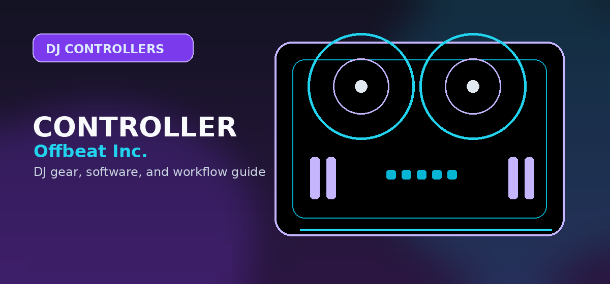

Best Motorized DJ Controllers
A premium niche buying guide for DJs who want moving platters, scratch feel, Serato performance workflows, and alternatives to static jog-wheel controllers.

Disclosure: This page uses affiliate links. We may earn a commission at no extra cost to you. Full disclosure →
A premium niche buying guide for DJs who want moving platters, scratch feel, Serato performance workflows, and alternatives to static jog-wheel controllers.
Best motorized DJ controllers: quick picks
Motorized controllers should not be treated as normal beginner controllers. They are for DJs who care about platter feel, scratching, open-format routines, vinyl-style cueing, and performance muscle memory. If the buyer only wants to learn basic transitions, recommend a normal beginner controller first.
RANE ONE
The RANE ONE remains the clearest motorized-controller recommendation because it gives Serato users a serious moving-platter workflow without requiring a full turntable/mixer/DVS setup. It is the logical choice for scratch-curious open-format DJs who want one integrated unit.
Confirm today’s price, stock, and return policy before buying.
RANE Performer
The Performer path is for DJs who want newer RANE performance hardware, deep Serato integration, and a more ambitious scratch/open-format setup than a basic controller. It is a premium consideration for open-format and scratch DJs who want current RANE performance hardware rather than a basic controller.
Confirm today’s price, stock, and return policy before buying.
Traditional turntables + mixer + DVS
For DJs who are serious about vinyl feel, a controller may not be the final answer. A turntable/mixer/DVS route costs more and takes more setup work, but it is the more transferable scratch foundation.
Who should buy motorized platters?
Buy motorized if
- You want to learn scratching with moving-platter feedback.
- You play open-format sets where cueing and cutting matter.
- You already know Serato is your preferred software.
- You want a self-contained alternative to turntables and a mixer.
Skip motorized if
- You are an absolute beginner on a strict budget.
- You only want basic beatmatching and transitions.
- You prefer rekordbox/CDJ prep over Serato scratch workflows.
- You need the lightest possible mobile rig.
Motorized vs static jog wheels
| Decision factor | Motorized controller | Static jog controller |
|---|---|---|
| Scratch feel | Closer to turntable-style touch and release | Acceptable for nudging, cueing, and casual scratch gestures |
| Cost | Higher, often premium Serato territory | Lower, with many beginner and midrange options |
| Portability | Heavier and more specialized | Usually lighter and easier to transport |
| Learning curve | Better for vinyl-style skill growth | Better for general mixing fundamentals |
| Best software fit | Serato DJ Pro | rekordbox, Serato, djay, Traktor depending model |
How this fits the buyer journey
Use this guide after comparing the broader Controller Hub and Serato controller page. It is not a beginner-controller shortcut. Readers who are not sure they need motorized platters should be sent to beginner controllers or controllers under $1,000 instead.
Motorized controller models to compare
Motorized controllers split into three practical groups. Battle-style units prioritize platter feel, crossfader quality, and scratch control. Hybrid performance controllers add pads, effects, and modern software features around motorized platters. Beginner motorized options offer vinyl-style learning at lower cost but usually compromise on outputs, build quality, or software depth.
Before buying, test how the platter starts and stops, whether torque feels natural, how the crossfader responds, and whether replacement parts are available. A motorized controller is more mechanical than a static-jog controller, so long-term durability and serviceability matter. For casual mixing, the extra weight and maintenance may not be worthwhile. For scratch practice, it can be the difference between fighting the controller and actually building timing.
How to use this guide in a real DJ setup
Before changing gear, software, or workflow, connect the recommendation to an actual use case: home practice, recorded mixes, streaming, mobile events, club preparation, or production crossover. A choice that looks best on paper can still be wrong if it adds setup friction or does not match the way you will play.
The safest workflow is to test the setup exactly as you will use it, then document the cable path, software version, library source, and backup plan. That prevents most of the avoidable failures that happen when DJs buy the right-looking tool but never validate the whole system.
When motorized platters are worth paying for
Motorized controllers are not automatically better. They are worth it when platter resistance, start/stop feel, scratching, back-cueing, and turntablist habits are part of the way you perform.
If you mostly mix house, techno, pop, or wedding sets with long blends, a strong non-motorized controller may be a better value. If you scratch, juggle, or want a digital setup that keeps vinyl muscle memory alive, motorized platters become a real performance feature instead of a novelty.
Frequently Asked Questions
Are motorized DJ controllers worth it?
They are worth it for scratch, open-format, and vinyl-feel workflows. They are not necessary for basic beginner mixing.
What software is best for motorized controllers?
Serato DJ Pro is the most common serious path for motorized controller workflows.
Should beginners buy a RANE ONE?
Only if they specifically want scratch/open-format platter feel and have the budget. Most beginners should start cheaper.
What should I check before buying this DJ controller?
Confirm software compatibility, audio outputs, headphone cueing, driver support, and whether the controller fits your real practice or gig setup.
Is this controller category good for beginners?
It can be, but beginners should prioritize reliable software support, simple routing, and controls that teach transferable DJ habits before paying for advanced performance features.
Motorized controller value check
Pay for motorized platters only when scratch feel, turntable-style pitch response, or performance muscle memory is central to the buyer. If the goal is general mixing, club prep, or a first serious controller, compare controllers under $1000 and Serato controller options before spending more. Always check current price and warranty terms, because this category has wider price swings and fewer safe substitutes than standard controllers.